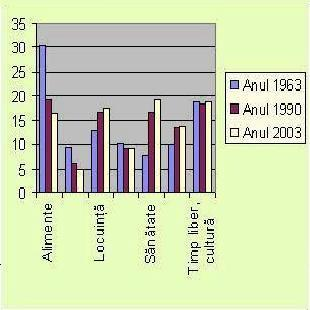

Toţi suntem consumatori. Unui adolescent, elev de liceu, îi place să se hrănească mai degrabă cu “burgeri” sau pizza, preferă o Cola, frecventează şcoala, este interesat de cărţi, reviste, CD-uri, computer şi internet, “iese” în excursii, discoteci, la cinema, ia calciu şi vitamine, face sport etc. “Burgerii”, pizza, cola, şcoala, revistele… sunt bunuri şi servicii care satisfac nevoi diverse, specifice vârstei, preferinţelor, nivelului de cultură şi civilizaţie al unei persoane.
Consumatorul “REGE”. În economia de piaţă, formula “consumatorul este rege” nu reprezintă o afirmaţie lipsită de conţinut, ci este expresia sintetică a realităţii, conform căreia producţia se subordonează consumului. Astfel, există specialişti în marketing care vin în întâmpinarea dorinţelor consumatorului, analizând, chiar prognozând preferinţele acestuia, cu scopul de a concepe produsul potrivit la momentul potrivit.
“Prima condiţie a reuşitei în afaceri este să apreciezi corect nevoile consumatorului. Orice eroare în acest sens îl costă scump pe producător.” (M.Didier.)
În secolul nostru s-a produs un adevărat salt în consum. Statisticile arată că astăzi noi consumăm de trei ori mai mult decât părinţii noştri. Faptul este vizibil dacă ne uităm în jurul nostru, la bunurile pe care le folosim (de exemplu, dotarea cu aparatură casnică).
Studiile specialiştilor pun în evidenţă existenţa unei ierarhii a nevoilor. Aceasta face ca în situaţiile caracterizate printr-un nivel de trai scăzut, să fie satisfăcute nevoile urgente, iar o dată cu creşterea nivelului de trai, să crească şi cheltuielile pentru bunuri şi servicii care nu sunt indispensabile (recreere, timp liber, concedii, călătorii etc.).
